1、概述
在易语言中数组操作都是通过“[]”进行，而在火山中主要利用数组对象操作，譬如：文本数组类、整数数组类对象数组类等。虽然火山视窗中也支持数组符号来定义数组，但是暂未提供相关的数组操作方法，因此在日常开发中只能使用数组对象来操作，相对于数组符号数组对象的操作更加灵活。
下面用文本数组来演示易语言和火山视窗之间的操作差异。
2、加入成员
易语言演示：
在易语言中利用“加入成员()”方法添加成员到数组中。
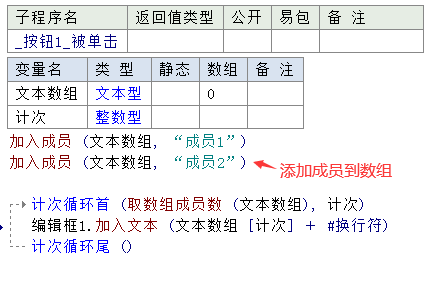
运行结果如下：
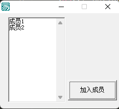
火山演示：
在火山中需要定义“文本数组类”变量，调用其“加入成员()”方法来添加成员。
数组对象的循环取出内容，相对易语言来说也简单很多。
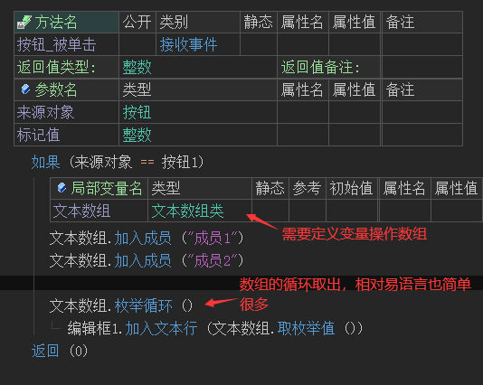
运行结果如下：
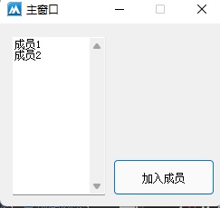
3、取成员
易语言演示：
易语言取数组成员利用数组下标即可取出，下标索引从1开始。
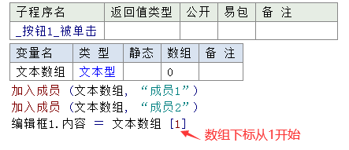
运行结果如下：
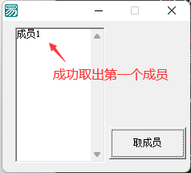
火山演示：
在火山视窗中利用数组对象的“取成员()”方法进行获取成员，成员索引从0开始。
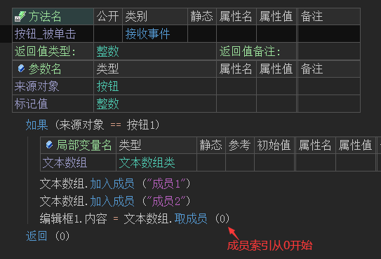
运行结果如下：
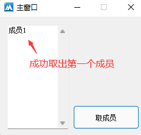
4、插入成员
易语言演示：
在易语言中需要通过“插入成员()”方法来插入成员，成员索引从1开始。
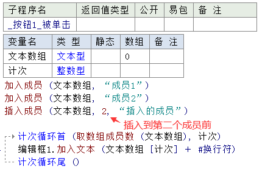
运行结果如下：
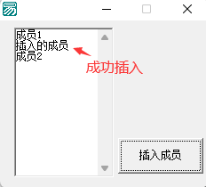
火山演示：
在火山视窗中也是通过“插入成员()”方法来插入，需要注意的是，其成员索引从0开始。
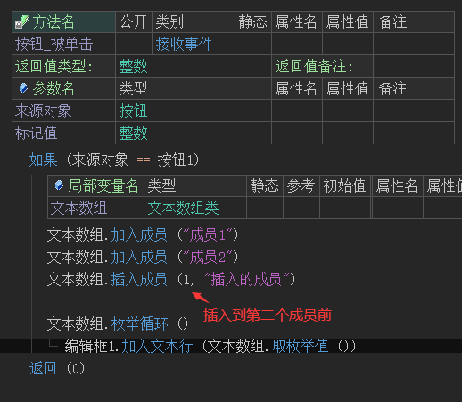
运行结果如下：
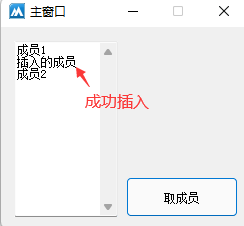
5、替换成员
易语言演示：
在易语言中利用数组下标就可以实现替换成员。
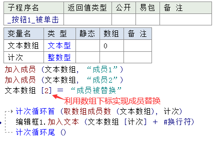
运行结果如下：
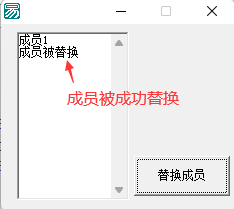
火山演示：
在火山视窗中需要利用“置成员值()”方法进行替换成员。
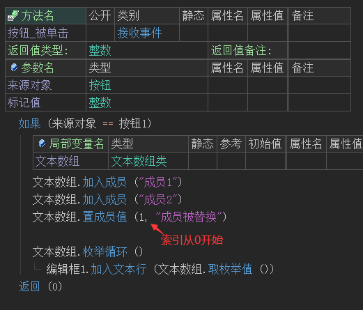
运行结果如下：
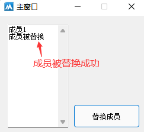
6、查找成员是否存在
易语言演示：
在易语言中需要自己封装一个方法，利用循环来处理。
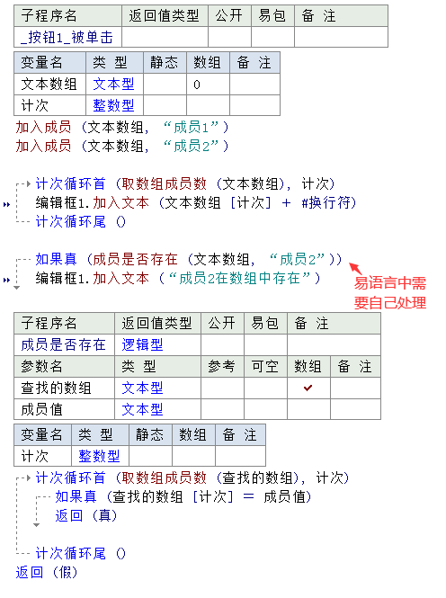
运行结果如下：
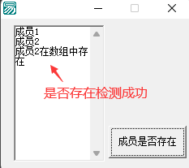
火山演示：
在火山视窗中直接使用“所指定值是否存在()”方法进行判断即可。
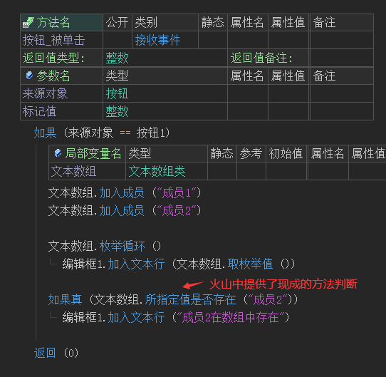
运行结果如下：
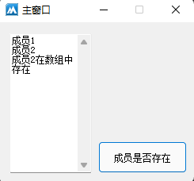
7、删除成员
易语言演示：
在易语言中使用“删除成员()”方法就可以删除成员，成员索引从1开始。
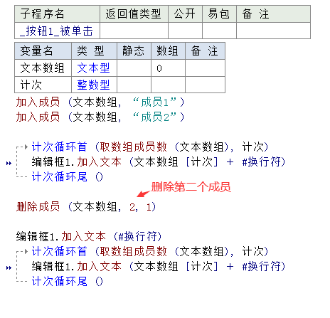
运行结果如下：
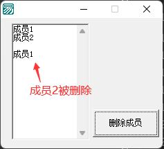
火山演示：
在火山中同样使用“删除成员()”方法，其成员索引从0开始。
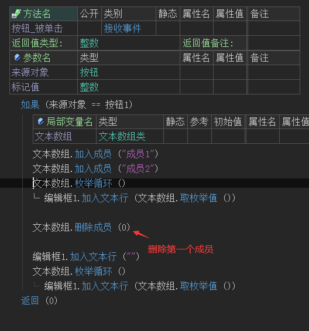
运行结果如下：
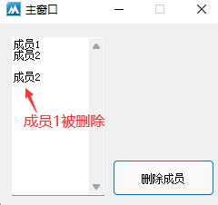
8、清空数组
易语言演示：
在易语言中通过“重定义数组()”方法进行清空数组。
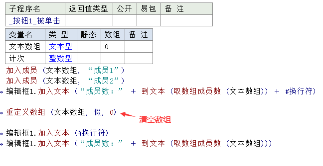
运行结果如下：
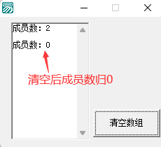
火山演示：
在火山视窗中调用“删除所有成员()”方法进行清空。
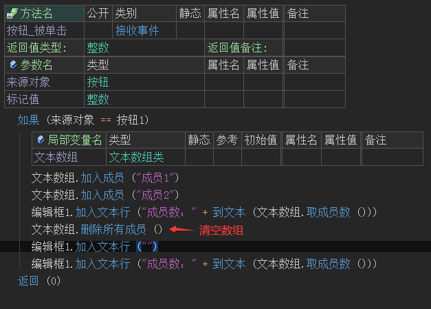
运行结果如下：
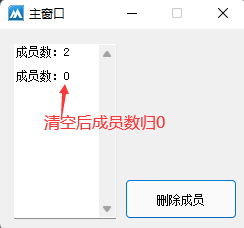
9、扩展知识“对象数组”
在易语言中可以直接通过“加入成员()”来添加对象数据.
在火山中有两种方案。
第一：直接使用对象数组类；
第二：使用对象数组模板类；
前者在操作时需要强制转换，后者则不需要。
对象数组类演示：
注：对象数组进行取成员时，赋值后的对象是一个全新的对象，操作此对象不会影响数组内的对象。
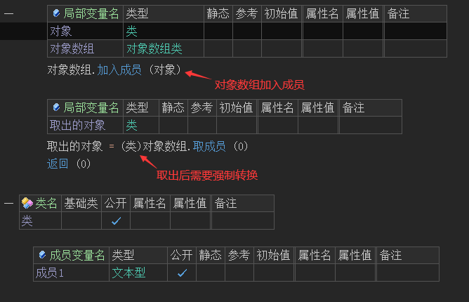
对象数组模板类演示：
首先新建一个类，基础类填写“对象数组模板类”，属性名提供“@模板实现类”属性值提供类名，即可完成对象数组的创建。
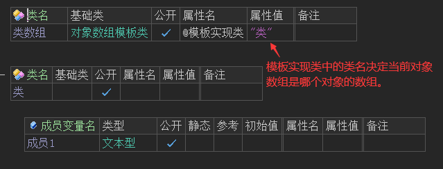
使用对象数组模板类创建的数组，在取成员时不需要强制转换即可赋值。
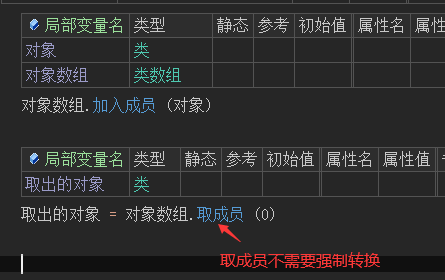